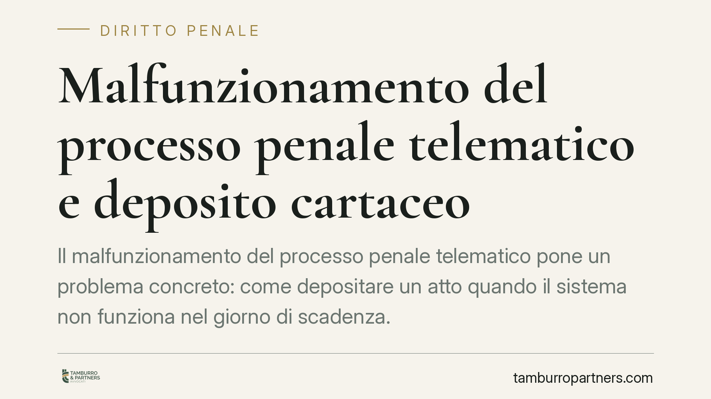

Malfunzionamento del processo penale telematico e deposito cartaceo
Il malfunzionamento del processo penale telematico pone un problema concreto: come depositare un atto quando il sistema non funziona nel giorno di scadenza. La giurisprudenza di legittimità e la disciplina tecnica consentono, a precise condizioni, il deposito cartaceo sostitutivo. Vediamo presupposti, procedura di attestazione e indicazioni operative per il difensore, con un'avvertenza sul rischio di interpretazioni estensive non supportate.

Il caso
Il tema è noto a chi frequenta le cancellerie penali: il giorno della scadenza il sistema di deposito telematico non risponde, oppure rifiuta l'invio. L'atto, però, va depositato comunque. Il nodo è stabilire quando sia legittimo tornare al deposito cartaceo e quali atti ne siano interessati.
Secondo recente giurisprudenza di legittimità, in presenza di un malfunzionamento certificato del sistema, il deposito con modalità non telematica opera come strumento sostitutivo per garantire l'esercizio dei diritti processuali. Va però evitata ogni lettura assoluta: il principio non equivale a un'autorizzazione indiscriminata e svincolata dai presupposti tecnici. La portata esatta della pronuncia va riscontrata nella massima ufficiale prima di trarne regole generali.
Avvertenza sulla citazione: gli estremi numerici della pronuncia richiamati da alcune fonti secondarie non risultano al momento verificabili. Per correttezza, non riportiamo numero e anno fino a riscontro diretto sulla banca dati ufficiale. Su questi profili consigliamo sempre di consultare il testo integrale.
Inquadramento normativo
La disciplina del processo penale telematico è stata rimodellata dalla riforma Cartabia (D.Lgs. 10 ottobre 2022, n. 150) e dalle relative disposizioni attuative. Attenzione a non confondere due piani distinti:
- l'art. 175 c.p.p. disciplina la restituzione nel termine in favore di chi, senza colpa, non ha potuto osservare un termine: è istituto diverso e non va sovrapposto al tema del malfunzionamento;
- la gestione del malfunzionamento dei sistemi informatici e del deposito con modalità non telematiche trova riferimento nelle norme sul deposito degli atti penali e, soprattutto, nella regolamentazione tecnica.
Il livello tecnico è centrale. Il regolamento sul processo penale telematico (D.M. 29 dicembre 2023, n. 217, e successivi provvedimenti) e le indicazioni della Direzione Generale per i Sistemi Informativi Automatizzati (DGSIA) individuano quando un malfunctionamento è giuridicamente rilevante, come viene attestato e con quali effetti sui termini. Non ogni rallentamento percepito dall'utente integra il presupposto: occorre un malfunzionamento attestato secondo le procedure ufficiali.
Un'ultima precisazione: la disciplina del penale telematico è autonoma rispetto a quella del processo civile telematico. Regole, provvedimenti e prassi non sono interscambiabili, e trasporre soluzioni dall'uno all'altro è fonte di errori.
Cosa cambia per il difensore
Sul piano pratico, il quadro offre una tutela, ma condizionata.
Il deposito cartaceo non è una scelta discrezionale da attivare per comodità: è un rimedio che presuppone un malfunzionamento rilevante e documentabile. Il difensore che vi ricorra deve essere in grado di dimostrare il presupposto, perché su quella prova si gioca la tempestività dell'atto.
Il rischio opposto è la sovra-interpretazione: ritenere che, una volta certificato un disservizio, ogni deposito cartaceo sia automaticamente valido per qualsiasi atto e a tempo indeterminato. Questa lettura non è sicura e va maneggiata con prudenza, conservando ogni evidenza del disservizio e del momento del tentativo di deposito telematico.
Cosa fare in concreto
- Documenta il malfunzionamento in tempo reale. Conserva screenshot con data e ora, messaggi di errore e, se disponibili, i provvedimenti o gli avvisi ufficiali di sospensione o irregolare funzionamento del sistema.
- Verifica l'attestazione ufficiale. Controlla i canali istituzionali (portali ministeriali, comunicazioni DGSIA, avvisi dell'ufficio giudiziario) per accertare se il malfunzionamento è stato formalmente certificato e per quale arco temporale.
- Deposita in forma cartacea senza attendere la scadenza estrema. Se il sistema è irraggiungibile e il termine è prossimo, attiva subito il deposito in cancelleria, allegando la documentazione del disservizio.
- Fai verbalizzare o protocollare. Chiedi evidenza del deposito (ricevuta, protocollo, annotazione) per fissare in modo certo data e contenuto dell'atto.
- Nel dubbio, tutela anche il termine. Se permangono incertezze sulla rilevanza del malfunzionamento, valuta con l'assistenza tecnica gli strumenti a presidio del rispetto del termine, senza confidare acriticamente sulla sanatoria del cartaceo.
Il messaggio operativo è semplice: il deposito cartaceo sostitutivo è una via legittima, ma solo se ancorata a un malfunzionamento certificato e documentato. L'improvvisazione, in questa materia, si paga in termini di ammissibilità.
---
Contributo informativo a cura di Tamburro & Partners - Avv. Giuseppe Tamburro. Non costituisce parere legale.
Ogni condominio ha una storia a sé.
Se gestisci un'amministrazione e vuoi un confronto su una specifica questione condominiale, scrivi allo studio. Ti rispondiamo entro un giorno lavorativo.